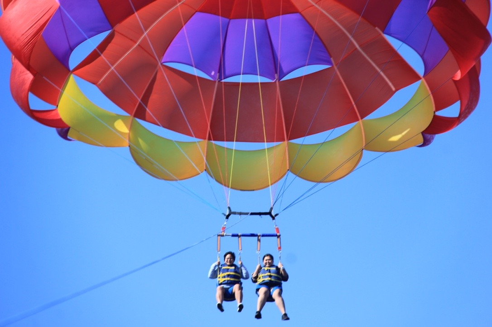

The title of my project
A short subtitle
Over 6 years of military experience with shipboard electrical distribution and Gas Turbine Systems maintenance, repair and operation; Precision calibration of all gages, switches and transmitters; Operational testing of electrical, mechanical, hydraulic, and pneumatic systems; Outstanding performance in leadership, including Maintenance Management and Supervisor assignments; Assists in identifying root causes of system malfunctions; Consistently engaged in systems inspections and troubleshooting. Over 3 years of experience in industrial electrical system and instrumentation such as Temperature, Pressure, Level and Flow transmitters. Ten years of experience in problem solving/troubleshooting and calibration of electrical and instrumentation equipment.

Over 6 years of military experience with shipboard electrical distribution and Gas Turbine Systems maintenance, repair and operation; Precision calibration of all gages, switches and transmitters; Operational testing of electrical, mechanical, hydraulic, and pneumatic systems; Outstanding performance in leadership, including Maintenance Management and Supervisor assignments; Assists in identifying root causes of system malfunctions; Consistently engaged in systems inspections and troubleshooting. Over 3 years of experience in industrial electrical system and instrumentation such as Temperature, Pressure, Level and Flow transmitters. Ten years of experience in problem solving/troubleshooting and calibration of electrical and instrumentation equipment.
Over 6 years of military experience with shipboard electrical distribution and Gas Turbine Systems maintenance, repair and operation; Precision calibration of all gages, switches and transmitters; Operational testing of electrical, mechanical, hydraulic, and pneumatic systems; Outstanding performance in leadership, including Maintenance Management and Supervisor assignments; Assists in identifying root causes of system malfunctions; Consistently engaged in systems inspections and troubleshooting. Over 3 years of experience in industrial electrical system and instrumentation such as Temperature, Pressure, Level and Flow transmitters. Ten years of experience in problem solving/troubleshooting and calibration of electrical and instrumentation equipment.